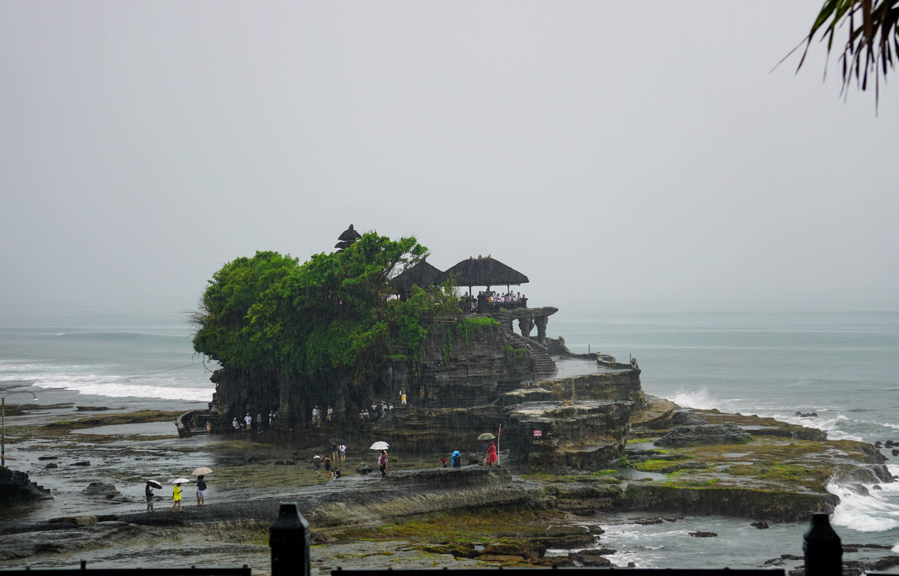
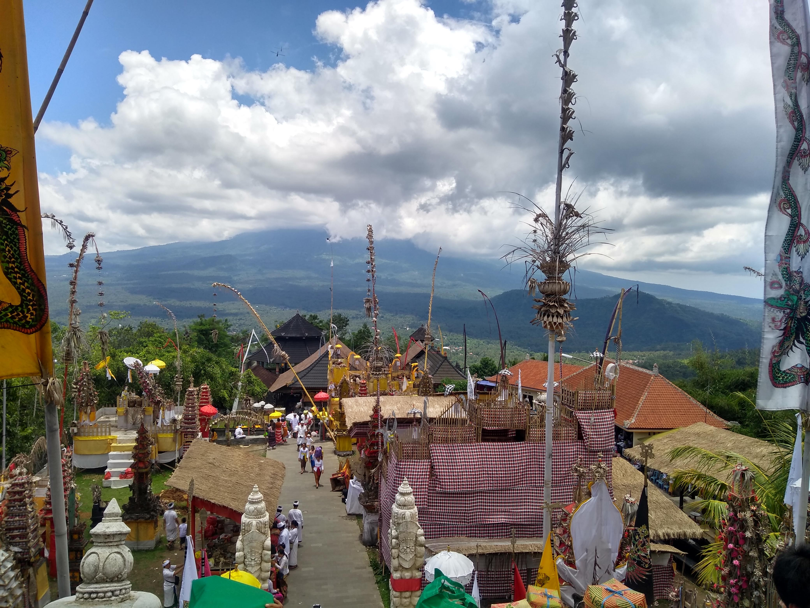
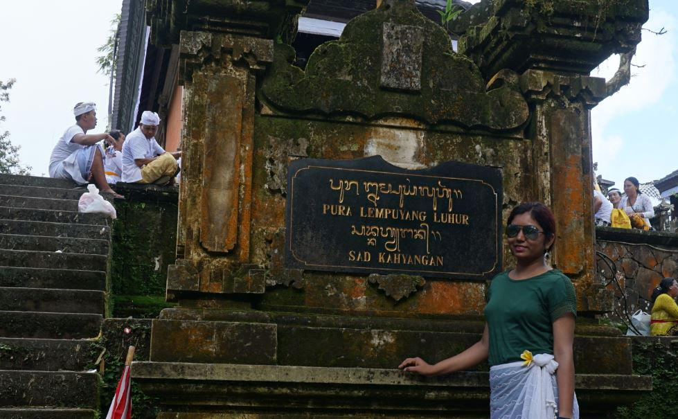
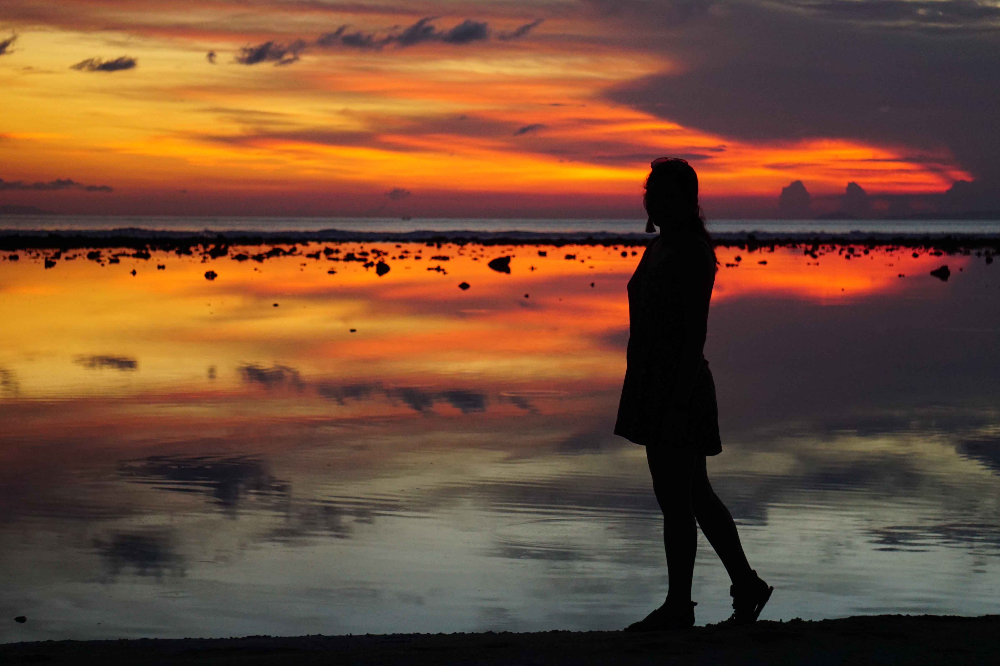
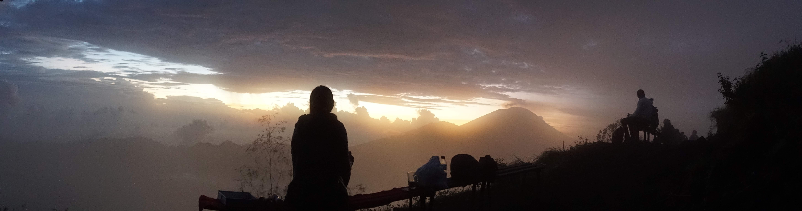

The Islands of Indonesia
Explore the scenic places of Bali and Gili Islands
Indonesia
The world's largest island country - Indonesia, is situated between the Indian and Pacific oceans. With more than 17,000 islands, Indonesia is a home to more than 270 million people and is the world's third largest democracy.
This largest country in southeast Asia offers a diverse set of experiences with its rich cultural heritage, biodiversity and beautiful landscapes.
Bali
Bali is the most popular tourist destination in Indonesia. It is famous for it's beautiful beaches, surfing spots, rice terraces, art and culture.
Bali is known as the island of thousand temples. Though most of the temples allow only Balinese to enter their spiritual places, there are few religious places that allow tourist visits with appropriate attire sarong.
Tanah Lot

Image Credits:Grayswoodsurrey

Image Credits:Trupti
Uluwatu Temple

Uluwatu Temple Image Credits:Emasami

Kecak Dance Performance Image Credits:Carfiend

Image Credits:Trupti
Lempuyang Temple
Pura Lempuyang Luhur is one of the oldest and holiest religious places in Bali.
For spiritual reasons, again, foreigners are not allowed to enter the main temple situated at the peak (around 3850 feet above sea level) of Mount Lempuyang. But it's worth hiking the mountain for the mesmerizing view of the Mount Agung!
On spiritual note, it is believed by the locals that only the sincere and respectful one with good heart make it to the top.

View of Mount Agung from Mount Lempuyang Image Credits:Trupti

Pura Lempuyang Temple Image Credits:Rupesh

Pura Lempuyang Temple Image Credits:Rupesh
Gili Islands
Gili Islands is a group of 3 small islands - Gili Trawangan, also known as Gili T, Gili Meno is the smallest of the three, and the third island is - Gili Air.

Image Credits:Rupesh

Image Credits:Trupti

Image Credits:Rupesh
With beautiful beaches all around, these islands are also famous for snorkelling and scuba diving.

Manta Ray Image Credits:Jon Hanson

Adventures
Well, there's lot of adventurous things to do on these islands - surfing in Uluwatu, scuba diving, snorkelling, huge swing rides and lot many water sports.
The most unique one is hiking the volcanic mountains like Mount Batur and Mount Agung.

Mount Batur Sunrise Trek Image Credits:Rupesh

View from Mount Batur Sumit Image Credits:Trupti